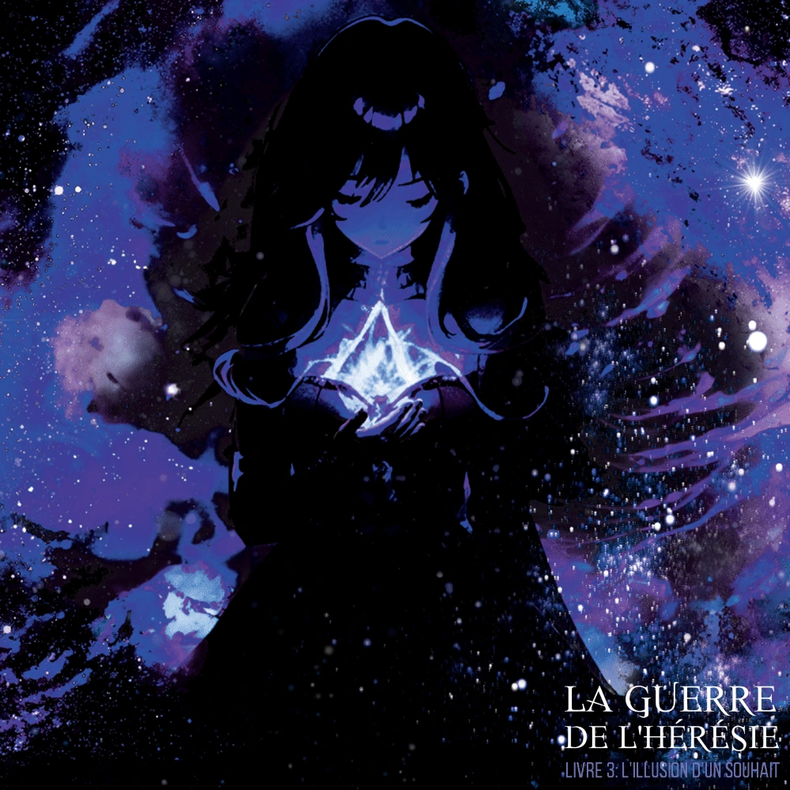

✦ ARCHIVES DES ESCOUADES DIVINES ✦
Sillia
Ange du Destin
Escouades Divines
✧ Registre ✧
- Nom
- Sillia
- Surnom
- Ange du Destin
- Grade
- Déesse de la Foudre
- Armée
- Escouades Divines
- Rang
- Delta
- Race
- Zoltres
- Particules
- Foudre
- Arme
- Lance
- Âge
- Ère Divine
- Taille
- 170 cm
- Yeux
- Dorés
Présentation
Sillia est la Déesse de la Foudre, également connue dans les légendes sous le nom d’Ange du Destin. Maîtresse de la foudre et des orages, elle est réputée pour être la divinité possédant la plus grande puissance brute. Sa force est telle que même Omia n’a jamais pu déterminer si ses pouvoirs avaient une quelconque emprise sur elle. Détentrice du rang Delta, Sillia occupe la 4e place dans la hiérarchie des Escouades Divines.
Apparence
Sillia se distingue par sa longue chevelure rousse et sa frange qui effleure ses sublimes yeux dorés. Elle porte une tenue rouge moulante qui épouse les contours de son corps, ainsi qu’un ras-du-cou noir qui enserre délicatement sa gorge. Deux barrettes évoquant des cornes viennent également orner sa chevelure. Au combat, la divinité manie une longue lance rouge aux lignes futuristes. Sillia est toujours accompagnée d’un petit oiseau bleu, aux plumes de foudre.
Histoire
Sillia est un véritable électron libre au sein des Escouades Divines. Sa puissance démesurée et son tempérament imprévisible font d’elle une divinité particulièrement difficile à encadrer. Semblant poursuivre son propre objectif, elle est intervenue dans plusieurs événements décisifs, contribuant notamment à précipiter la chute de Noctalia Vi Urteil. Son histoire paraît également étroitement liée à Freea, la planète des neiges.
Apparition
Sillia fait sa première apparition au chapitre 28, « Les Frontières de l’Hérésie », du 3e tome de La Guerre de l’Hérésie, intitulé L’Illusion d’un Souhait.
✦ POURSUIVRE DANS LES ARCHIVES ✦